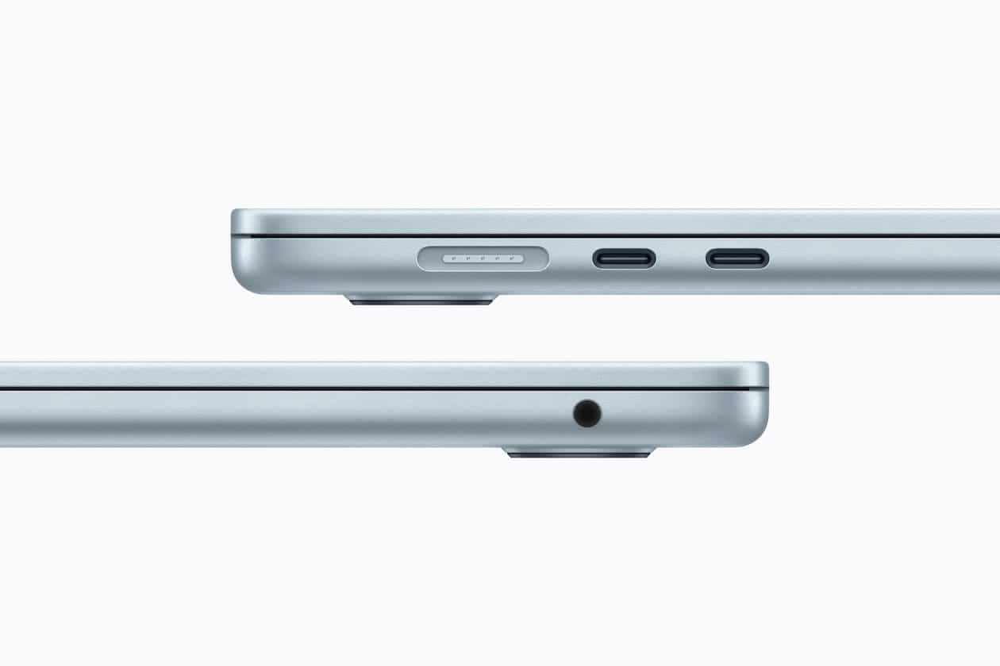

⚡ Lançamento 2026
O Air mais rápido que a Apple já fez. 9,5× mais IA que o M1, fanless, 18h de bateria e tela Liquid Retina de 500 nits.
Site oficial Apple
R$ 13.999
Economize
R$ 6.219
44% OFF
12x R$ 745
SEM JUROS no cartão
ou R$ 7.780 no Pix · 13% OFF
Falar no WhatsApp01 · O que é
O Air mais potente já feito. Mesmo design fino, mas com chip M5 — a maior salto em IA da Apple Silicon.
02 · Pra quem é
Quem está em Intel, M1 ou notebook Windows. E quem usa muito IA, Xcode, navegador pesado, multitarefa.
03 · Pra quem NÃO é
Edição 4K profissional pesada, render 3D, treino de modelos grandes. Pra isso existe o MacBook Pro.
04 · Quanto custa aqui
12x R$ 745 sem juros · R$ 7.780 no Pix.
Apple cobra R$ 13.999 — você economiza R$ 6.219.
★ O grande diferencial
O M5 é o primeiro chip Apple com Neural Accelerators dentro de cada núcleo de GPU. Na prática: tarefas de IA — resumos, tradução, geração de imagem, edição automática — rodam no próprio Mac, sem internet e sem mandar seus dados pra servidor de ninguém.
9,5×
mais rápido em IA que o MacBook Air M1
4×
mais rápido que o M4 em workloads de IA
16
núcleos no Neural Engine + ray tracing 3ª geração
Por que isso importa: processadores Intel não rodam Apple Intelligence. M1/M2/M3/M4 rodam, mas o M5 é onde a coisa fica realmente fluida. Se você usa ChatGPT, Copilot, Gemini ou edita fotos/vídeos com IA todo dia, o M5 economiza tempo (e mensalidade) de verdade.
O M1 foi lançado em 2020 e ainda é um Mac usável. Mas cinco anos depois, o M5 é outro patamar — especialmente em IA, que é a parte do uso que mais cresceu.
Vale o upgrade? Se você tem M1 com 8 GB e usa o computador pra trabalhar — sim, vale. O M1 com 8 GB já está sofrendo com macOS Tahoe (entra em swap constante). Se você tem M1 com 16 GB e só usa pra navegar e Office, dá pra esperar mais 1–2 anos.
Aqui não tem dúvida. Se você ainda usa MacBook Intel (2017–2020), o salto pro M5 é provavelmente o maior upgrade de notebook que você vai sentir nesta década.
18h de bateria · zero ventoinha · trabalha de qualquer lugar sem encostar no carregador
+6h
O M5 dura até 18 horas. Um Air Intel entregava na prática 6–9h. Você fecha o expediente sem encostar no carregador.
0 dB
Sem ventoinha. Air Intel ligava o turbo da ventoinha em qualquer videochamada. M5 é silêncio absoluto, sempre.
5–8×
Em tarefas reais (export de vídeo, Xcode, Lightroom), o M5 é entre 5 e 8 vezes mais rápido que um Air Intel i5/i7 de 2020.
macOS
Macs Intel não recebem mais o macOS Tahoe. Você está preso em uma versão antiga, sem Apple Intelligence, sem novidades, com prazo de validade.
Resumo direto: se o seu Mac é Intel, qualquer Apple Silicon vai parecer mágica. O M5 16/512 é o ponto onde você compra um aparelho que vai durar 6–8 anos confortavelmente — porque o M1 foi lançado há 5 anos e ainda funciona.
Vamos ser honestos: na maioria dos casos, não vale a pena trocar. M2/M3/M4 ainda são chips muito bons. Mas tem situação onde faz sentido.
✓ Vale o upgrade SE...
✕ NÃO vale SE...
Memória RAM
A Apple finalmente parou de vender Mac com 8 GB. E tem motivo técnico: o sistema operacional moderno simplesmente não cabe mais em 8 GB.
macOS Tahoe come RAM
O macOS atual mantém modelos de IA carregados em memória o tempo todo (Apple Intelligence, Spotlight inteligente, transcrição automática). Em 8 GB, o sistema entra em swap — ele finge que tem mais RAM usando o SSD, e isso deixa tudo lento e queima a vida útil do disco.
Navegador moderno é pesado
Chrome com 15 abas + Slack + Spotify + Notion + Zoom já passa de 10 GB facilmente. Em 8 GB você fecha aba o tempo todo. Em 16 GB simplesmente não pensa nisso.
A RAM não é upgradeável
No MacBook Air, a RAM é soldada junto do chip (unified memory). Não dá pra aumentar depois. Por isso 16 GB hoje é seguro pelos próximos 5–6 anos. 8 GB já é apertado em 2026.
256 GB enche rápido. 1 TB é caro e a maioria não usa metade. 512 GB é o sweet spot — espaço pra trabalhar tranquilo sem pagar por gordura que vai ficar parada.
256 GB
Apertado
512 GB
Equilibrado
1 TB
Excessivo p/ maioria
90% dos usuários não precisam do MacBook Pro. O Air M5 com 16 GB faz quase tudo que o Pro faz, custa a metade, é mais leve e silencioso.
O Air já resolve para:
Vá de Pro APENAS se:
Dica honesta: se você está em dúvida entre Air e Pro, é porque você não precisa do Pro. Quem precisa do Pro sabe que precisa.

MagSafe 3 · 2× Thunderbolt 4 · Jack 3.5mm
Chip
Apple M5
CPU 10-core (4 performance + 6 eficiência) · GPU 10-core com Neural Accelerators · Neural Engine 16-core · Ray tracing 3ª geração
Memória
16 GB unified
Banda de 153 GB/s · compartilhada CPU + GPU + Neural Engine · não-upgradeável
Armazenamento
512 GB SSD
NVMe rápido · escrita e leitura sequencial superior a 3.000 MB/s
Tela
13,6" Liquid Retina
2560 × 1664 px · 224 ppi · 500 nits · cor P3 · True Tone
Bateria
Até 18 horas
Reprodução de vídeo · navegação web ~15h · carregamento via MagSafe ou USB-C
Conexões
MagSafe + 2× TB4
2× Thunderbolt 4 / USB-C · MagSafe 3 · jack 3,5 mm · Wi-Fi rápido · Bluetooth 5.3+
Câmera & áudio
12 MP Center Stage
Áudio espacial · 4 alto-falantes · 3 microfones de qualidade de estúdio
Físico
1,24 kg · 11,3 mm
Alumínio reciclado · fanless (zero ventoinha) · Touch ID
Sistema
macOS Tahoe
Suporte a Apple Intelligence · receberá ao menos 6–7 anos de atualizações
⚡ Pronto pra fechar
Estoque limitado. Atendimento direto pelo WhatsApp — tira dúvidas, fecha pedido e combina entrega ou envio.
Falar agora no WhatsAppResposta em minutos · Seg–Sáb